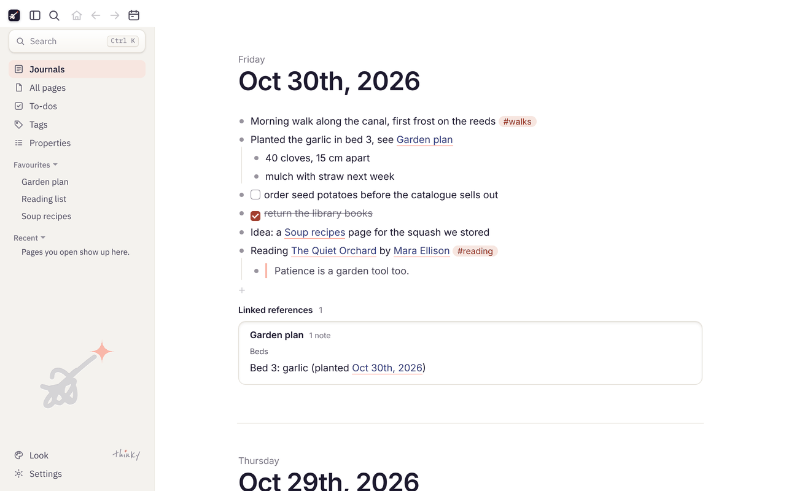
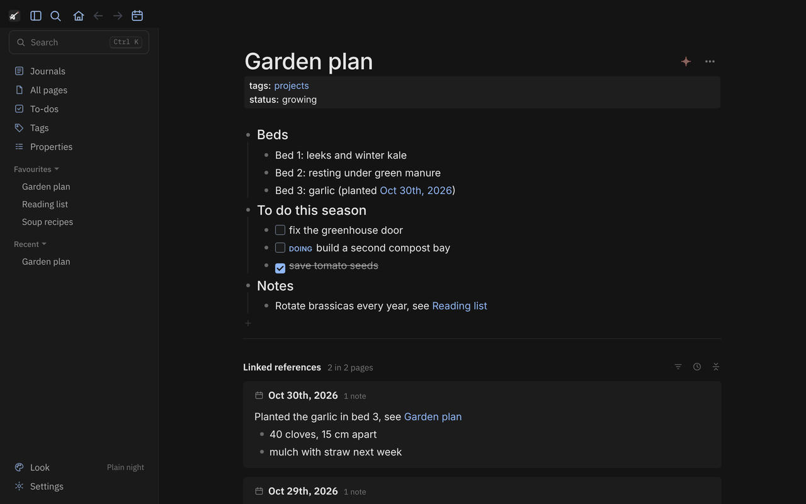
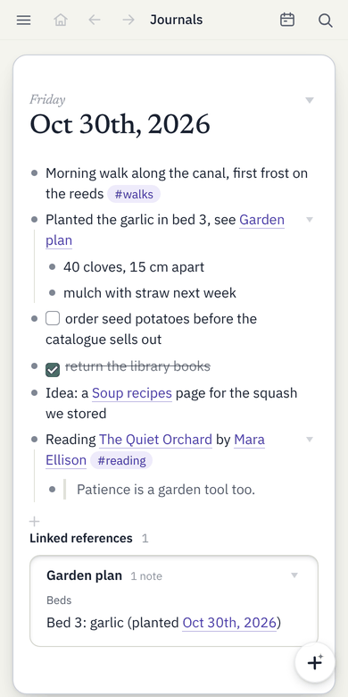

thinky
A small, fast outliner for your notes, on Windows and Android.
thinky opens a folder of Logseq-style Markdown notes and lets you write in it: daily journals, pages, [[links]], #tags, properties, to-dos and the notes that link back to each page. It starts in a moment, stays small, and works on the same plain files Logseq uses, so you can switch back and forth.
Your notes stay plain Markdown files on your own devices. thinky has no accounts, no servers and no tracking. To use the same notes on your laptop and phone, keep the folder in a sync app you already use, such as Google Drive or Syncthing.
Always the newest release. Also: a portable Windows program that needs no installing, and every release. (The files keep the app's old name, Lean Outliner, so updates install over older versions.)

Use it with your Logseq notes
thinky opens an existing Logseq folder as it is: choose the folder that holds pages, journals and logseq/config.edn. Nothing is imported or converted.
- Your settings carry over. It reads that folder's
config.edn: where journals and pages live, the date and file name formats, favourites, the to-do workflow, quick-capture templates and shortcuts. - Logseq's own Markdown. Bullets,
key:: valueproperties,[[links]],#tags, block references, TODO/DONE, scheduled and deadline dates. Lines you didn't touch are written back exactly as they were, so Logseq opens every file thinky saves. - Use both. Logseq on the desktop or the phone can keep using the same folder, even while thinky has it open. When both change a page, thinky merges the two and never silently overwrites.
For Logseq's Markdown folders (Logseq 0.10 and its file-based graphs). Org-mode files, whiteboards and Logseq's newer database version aren't supported.
What it does
- Journals and pages, with links, tags, properties, linked and unlinked references, and fast search that forgives typos in page names.
- Safe with sync. If a page changed on another device while you were writing, thinky merges the two. When it can't, it shows both versions side by side, and nothing is ever silently overwritten. Safety copies and each page's history let you go back.
- Quick capture. A shortcut key on Windows opens a small "Add to journal" box at once. On Android: home-screen widgets, a Quick Settings tile and the share sheet. A browser extension sends highlights from Edge.
- Feels like Logseq. The same files, folders and settings, block references, templates, to-do states, tabs and two pages side by side, and many looks, light and dark.
- Lean. About 3 MB to install on Windows, with no framework. Nothing runs in the background, except a tiny helper if you choose a shortcut key.


Installing
Windows: run the installer. Windows may show "Windows protected your PC", because the program isn't signed with a paid certificate; choose More info, then Run anyway. After that, thinky updates itself from Settings › About, and checks each update's signature before installing it.
Android: open the downloaded file and allow your browser to install apps when Android asks. thinky needs "access to all files" to read your notes folder. Later versions update from Settings › About; Android only accepts an update signed like the app you have.
Open source
thinky is free software under the GNU Affero General Public License, version 3. The code, the history of how it was built and the issue tracker are on GitHub: github.com/srikanth-iyer/thinky. Found a problem or have an idea? Open an issue, or use Settings › About › Send feedback in the app.